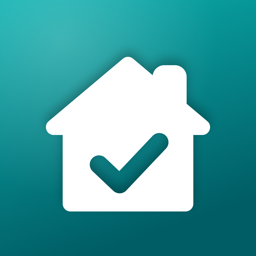

联系支持
没有找到答案？请提交请求，我们会尽快回复。请求会公开发布在 GitHub 上，请勿填写地址、保单号等个人信息。
 Tend
Tend

关于 iPhone 和 iPad 版 Tend 的常见问题解答。
没有找到答案？请提交请求，我们会尽快回复。请求会公开发布在 GitHub 上，请勿填写地址、保单号等个人信息。
在设置过程中，你会告诉 Tend 房屋类型、所在半球、冬季是否结冰，以及家里有哪些设施（如暖炉、排水槽或泳池）。Tend 会挑选适用的维护任务，并分散安排在全年，让你不会手忙脚乱。季节性任务会落在正确的季节——南半球会自动对调。
如需修改答案，请前往房屋 › 轻点房屋名称。添加新设施后，Tend 会提供相应的任务。
按住该任务（或打开它），选择不适用于我的房屋。任务会从计划中隐藏但仍会保留，你可以在计划 › 已隐藏的任务中恢复。也可以直接删除。
在计划中轻点 +。选择新任务自定义时间安排，或选择浏览任务库，获取更多附带分步说明的专业任务。
季节性任务（如“秋季清理排水槽”）会保持原有时间段，下一季照常到期。其他任务（如空调滤网）会从你实际完成的那天开始重新计算。你也可以跳过一次，或推迟到之后。
可以。按住到期提醒通知，选择标记为完成或明天提醒我。你也可以在主屏幕添加接下来小组件，轻点任务旁的圆圈；或者问 Siri “Tend 里有什么到期了”。
同步是自动且免费的。请在两台设备上登录同一个 Apple 账户，并为 Tend 开启 iCloud（iPhone 设置 › 你的姓名 › iCloud）。在新设备上设置时，选择我已在其他设备上使用 Tend，你的房屋很快就会出现。
可以在 Tend › 设置 › 同步与隐私中查看同步状态。
前往设置 › 你的数据 › 备份。这会生成一个包含该房屋全部内容（含照片和文档）的文件，可以保存到“文件”App 或发送给自己。需要恢复时，使用从备份恢复。
要从所有设备上删除某套房屋及其全部内容，请前往房屋 › 轻点房屋名称 › 删除此房屋。要移除 iCloud 中存储的全部数据，请前往 iPhone 设置 › 你的姓名 › iCloud › 管理账户储存空间 › Tend。详见我们的隐私政策。
一次购买，无需订阅。解锁更换预测（含 5 年预算）、房屋报告 PDF、文档扫描和多套房屋。其他所有功能（包括 iCloud 同步和备份）都是免费的。
请使用购买时的 Apple 账户登录，然后前往设置 › 恢复购买。Pro 也会与你的家人共享群组共享。
购买由 Apple 处理，请前往 reportaproblem.apple.com 申请退款。
可以。前往设置 › 应用图标，从七款设计中选择。
Tend 支持英文和简体中文，并跟随设备语言。如需只为 Tend 使用其他语言，请前往 iPhone 设置 › App › Tend › 语言。已创建的任务会保留创建时的语言。
可以。开启设置 › 同步与隐私 › 需要面容 ID。开启后，Tend 在 App 切换器中也会隐藏内容。